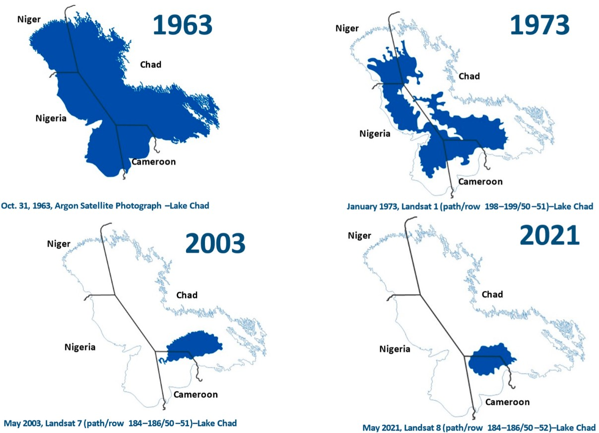

Lake Chad: A Vital Water Resource in Decline
Lake Chad is a strategic water resource shared by more than 40 million people in Sub-Saharan Africa. In the 1960s, it served as a primary source of water for irrigation and fishing in the region, but the capacity of Lake Chad to supply water for irrigation plummeted by 90% at the beginning of the twenty-first century.
"With some initiatives taken by the neighboring countries, Lake Chad has recovered about 5% of its water volume in recent years."
This research conducted an extensive literature review on Lake Chad and its riparian countries. The four major riparian countries were given particular attention due to their significant stake in the sustainability of Lake Chad. This review identified and analyzed the water usage trends in this region, both before and after the lake’s decline in water levels.
Our research findings revealed that riparian countries around Lake Chad have experienced an 80% increase in population growth and that the lake has now been reduced to 10% of its original size in the 1960s. Animal production in the region has increased significantly, too, particularly in Chad, and this increase of over 75% has contributed to the conflicts between farmers and herders in the region.
 The shrinking Lake Chad basin and its impact on surrounding regions.The possible solutions proposed for the restoration of Lake Chad include increased water harvesting activities in the basin, developing a legal framework for sustainable water use, incentive-based policies for stakeholders to mitigate climate extremes events, establishing a joint water administration for the basin, and introducing regenerative agricultural practices with a highly efficient micro irrigation system.
"Lake Chad’s recovery requires both innovation and cooperation among the countries that share its waters."